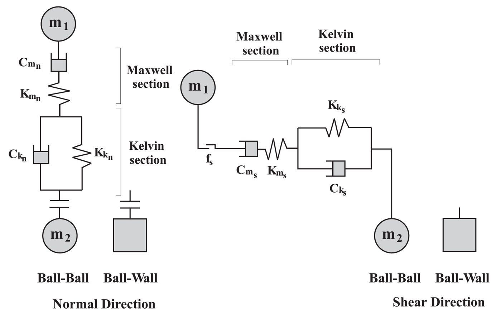

Burger 模型
Burger 模型通过在法向和剪切方向上串联的 Kelvin 模型和 Maxwell 模型来模拟蠕变机制。
引言
Burger 模型在法向和剪切方向上都提供一个与 Maxwell 模型串联的 Kelvin 模型。 Kelvin 模型是并联作用的线性弹簧和阻尼器组分的组合。Maxwell 模型则是串联作用的线性弹簧和阻尼器组分的组合。 Burger 模型作用在极小面积上，因此只传递力。
行为概要
Burger 模型的流变组分在 图 1（Figure 1） 中按法向和剪切方向给出。 在两个方向上，模型都把串联作用的 Kelvin 模型和 Maxwell 模型结合起来。 在法向方向，Kelvin 模型提供刚度为 \(K_{k_n}\) 的线性弹簧和黏度为 \(C_{k_n}\) 的阻尼器，Maxwell 模型 提供刚度为 \(K_{m_n}\) 的线性弹簧和黏度为 \(C_{m_n}\) 的阻尼器。Burger 模型可承受拉伸力（\(M_t=0\)）或不承受（\(M_t=1\)）。 在剪切方向，Kelvin 模型提供刚度为 \(K_{k_s}\) 的线性弹簧和黏度为 \(C_{k_s}\) 的阻尼器，Maxwell 模型 提供刚度为 \(K_{m_s}\) 的线性弹簧和黏度为 \(C_{m_s}\) 的阻尼器。摩擦系数为 \(f_s\) 的滑块按 Coulomb 定律限制剪切力的取值。


图 1：Burger 模型的流变组分。
在每个方向上，Burger 模型的总位移 \(u\) 是 Kelvin 段位移（\(u_k\)）与该模型 Maxwell 段位移 （\(u_{m_K}\)、\(u_{m_C}\)）之和：
上式的第一阶和第二阶导数由下式给出：
接触力 \(f\) 由 Kelvin 段及其一阶导数给出，见 (3)。注意符号 \(\pm\) 和 \(\mp\) 分别对应 法向和剪切方向（例如，\(\pm\) 在法向方向表示 \(+\)，在剪切方向表示 \(-\)）。
此外，利用 Maxwell 段的刚度 \(K_m\) 和黏度：
利用式 (2) 至 (4)，接触力 \(f\) 的二阶微分方程由下式给出：
给定步的力可根据其在上一步的取值以及当前步和前几步的位移值，用下述有限差 分格式更新。
活动-删除准则
当且仅当接触间隙（\(g_{c}\)）小于或等于零时，具有 Burger 模型的接触才是活动的。对非活动接触会跳过力-位移定律。
力-位移定律
Burger 模型的力-位移定律更新接触力和力矩：
其中 \(\mathbf{F}\) 综合了串联作用的 Kelvin 模型和 Maxwell 模型的贡献。 \(\mathbf{F}\) 被分解为法向力和剪切力：
其中 \(F_{n} >0\) 表示拉伸。剪切力位于接触面上， 并在接触面坐标系中表示：
由 Kelvin 段 (3) 中的第二式：
对时间导数采用有限差分格式的中心差分近似，并对 \(u_k\) 和 \(f\) 取平均值：
因此，
其中：
对 Maxwell 段，位移及其一阶导数由下式给出：
把 (4) 的第二式和第四式代入上面的第二式：
采用有限差分格式的中心差分近似，并对 \(f\) 取平均值，
因此，
Burger 模型的总位移及其一阶导数由下式给出：
对时间导数采用有限差分格式，
将式 (11) 和 (16) 代入上式，接触力 \(f^{t+1}\) 由下式给出：
其中：
接触力 \(f^{t+1}\) 可由 \(u^{t+1}\)、\(u^t\)、\(u_k^t\) 和 \(f^t\) 的已知值算出。
Burger 模型的力-位移定律由以下步骤组成。
按式 (19) 更新法向力 \(F_{n}\)。
按如下方式更新剪切力：
按式 (19) 更新剪切力 \(\mathbf{F}_{s}\)。
计算抗剪强度：
(21)\[F_{s}^{*} = - f_s F_{n} .\]更新线性剪切力：
(22)\[\begin{split}\mathbf{F}_{s} = \left\{\begin{array}{l} {\qquad \mathbf{F}_{s} ,\qquad \left\| \mathbf{F}_{s} \right\| \le F_{s}^{*} } \\ {\qquad F_{s}^{*} \left({\mathbf{F}_{s} \mathord{\left/ {\vphantom {\mathbf{F}_{s} \left\| F_{s}^{*} \right\| }} \right.} \left\| \mathbf{F}_{s} \right\| } \right),\qquad {\rm otherwise.}} \end{array}\right.\end{split}\]更新滑动状态：
(23)\[\begin{split}s=\left\{\begin{array}{l} {\qquad {\rm true},\qquad \left\| \mathbf{F}_{s} \right\| = F_{s}^{*} } \\ {\qquad {\rm false},\qquad {\rm otherwise.}} \end{array}\right.\end{split}\]若滑移状态为真，则该接触正在滑动。每当滑移状态改变时，都会发生 slip_change 回调事件。
能量分区
Burger 模型不提供任何能量分区。
属性
Burger 接触模型定义的属性在下表中简要列出，供快速 查阅；表中各列信息的说明见 接触属性（Contact Properties） 一节。
| 关键字 | 符号 | 说明 | 类型 | 范围 | 默认 | 可修改 | 可继承 |
|---|---|---|---|---|---|---|---|
| burger | 模型名称 | ||||||
| bur_knk | \(K_{k_n}\) | 法向刚度 Kelvin 段 [力/长度] | FLT | \([0.0,+\infty)\) | 0.0 | YES | NO |
| bur_cnk | \(C_{k_n}\) | 法向黏度 Kelvin 段 [力×时间/长度] | FLT | \([0.0,+\infty)\) | 0.0 | YES | NO |
| bur_knm | \(K_{m_n}\) | 法向刚度 Maxwell 段 [力/长度] | FLT | \([0.0,+\infty)\) | 0.0 | YES | NO |
| bur_cnm | \(C_{m_n}\) | 法向黏度 Maxwell 段 [力×时间/长度] | FLT | \([0.0,+\infty)\) | 0.0 | YES | NO |
| bur_ksk | \(K_{k_s}\) | 剪切刚度 Kelvin 段 [力/长度] | FLT | \([0.0,+\infty)\) | 0.0 | YES | NO |
| bur_csk | \(C_{k_s}\) | 剪切黏度 Kelvin 段 [力×时间/长度] | FLT | \([0.0,+\infty)\) | 0.0 | YES | NO |
| bur_ksm | \(K_{m_s}\) | 剪切刚度 Maxwell 段 [力/长度] | FLT | \([0.0,+\infty)\) | 0.0 | YES | NO |
| bur_csm | \(C_{m_s}\) | 剪切黏度 Maxwell 段 [力×时间/长度] | FLT | \([0.0,+\infty)\) | 0.0 | YES | NO |
| bur_fric | \(f_s\) | 摩擦系数 [-] | FLT | \([0.0,+\infty)\) | 0.0 | YES | NO |
| bur_mode | \(M_t\) | 法向力拉伸模式 [-] | INT | \(\{0,1\}\) | 0 | YES | NO |
| \(\;\;\;\;\;\;\begin{cases} \mbox{0: with tensile force} \\ \mbox{1: without tensile force} \end{cases}\) | |||||||
| bur_slip | \(s\) | 滑动状态 [-] | BOOL | {false,true} | false | NO | N/A |
| \(\;\;\;\;\;\;\begin{cases} \mbox{true: slipping} \\ \mbox{false: not slipping} \end{cases}\) | |||||||
| bur_force | \(\mathbf{F}\) | 总力（接触面坐标系） | VEC | \(\mathbb{R}^3\) | \(\mathbf{0}\) | NO | NO |
| \(\left( -F_n,F_{ss},F_{st} \right) \quad \left(\mbox{2D model: } F_{ss} \equiv 0 \right)\) | |||||||
表面属性继承
Burger 模型不提供属性继承能力。
方法
Burger 模型不提供任何方法。
回调事件
| 事件 | 数组槽位 | 值类型 | 范围 | 说明 |
|---|---|---|---|---|
| contact_activated | 接触已变为活动 | |||
| 1 | C_PNT | N/A | 接触指针 | |
| slip_change | 滑动状态已改变 | |||
| 1 | C_PNT | N/A | 接触指针 | |
| 2 | INT | {0,1} | 滑动变化模式 | |
| \(\;\;\;\;\;\;\begin{cases} \mbox{0: slip has initiated} \\ \mbox{1: slip has ended} \end{cases}\) | ||||
使用与验证示例
验证问题“Burger 接触模型：应力松弛（Burger’s Contact Model: Stress Relaxation）”把法向力的时间衰减与预期的解析解进行比较。
| 这些内容对您有帮助吗？… | FLAC3D © 2019, Itasca | 原文更新于 2020 年 10 月 8 日 |